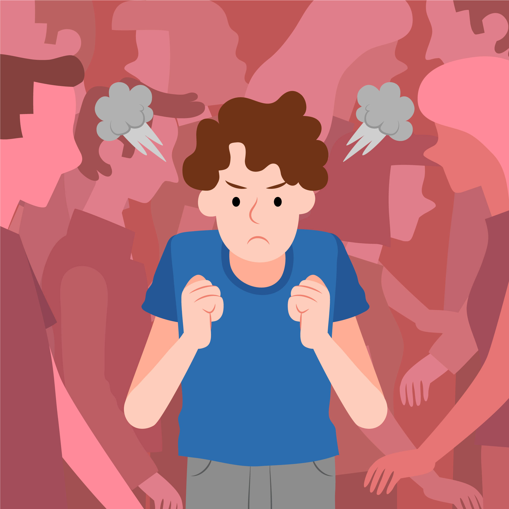
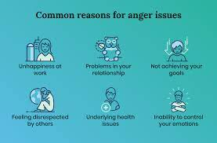
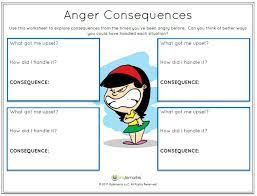
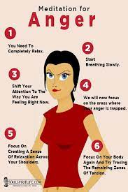

What is anger?
Anger is an emotion characterized by antagonism toward someone or something you feel had deliberately done you wrong.
Anger is a natural response to perceived threats. It causes your body to release adrenaline, your muscles to tighten, and your heart rate and blood pressure to increase. Your senses might feel more acute and your face and hands flushed.

Causes of why people get angry
There are many common triggers for anger, such as losing your patience, feeling as if your
opinion or efforts aren't appreciated, and injustice.
Other causes of anger include memories of traumatic or enraging events and worrying about
personal problems.

Consequences of anger
The long-term physical effects of uncontrolled anger include increased anxiety, high blood
pressure and headache.
Anger can be a positive and useful emotion, if it is expressed appropriately.
Long-term strategies for anger management include regular exercise, learning relaxation
techniques and counselling.

How to control anger?
1. Think before you speak. In the heat of the moment, it's easy to say something you'll later
regret.
2. Once you're calm, express your anger
3. Get some exercise
4. Take a timeout
5. Identify possible solutions
6. Stick with 'I' statements
7. Don't hold a grudge
8. Use humor to release tension